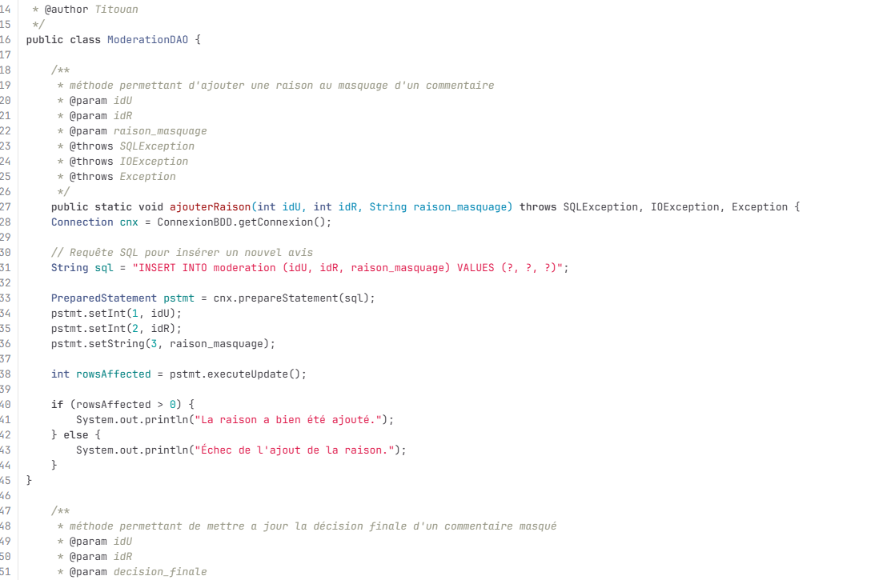
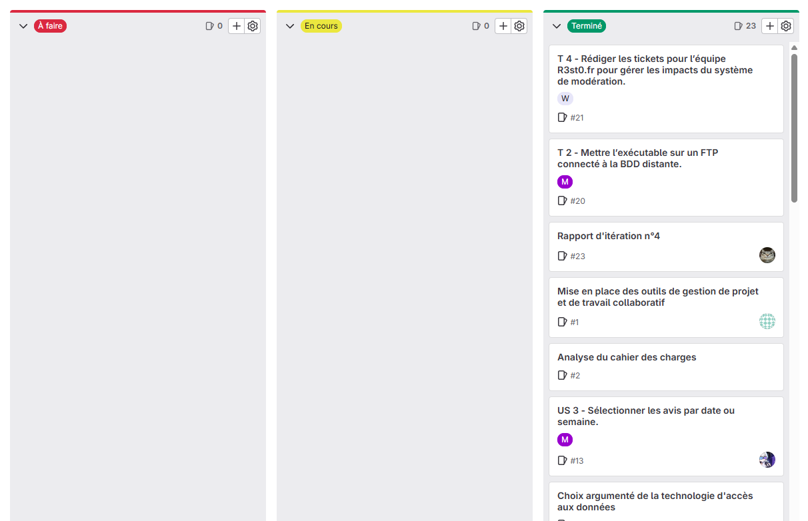

Compte rendu des différentes étapes de conception :
Ce projet est directement lié au projet R3sto, un site permettant de noter différents restaurants. Chaque utilisateur peut y laisser un commentaire. Pour garantir un espace sûr et respectueux, j’ai développé une application de modération afin de gérer les avis, avec plusieurs fonctionnalités spécifiques selon le rôle de l’utilisateur.
Compétences acquises :
Exploiter des référentiels, normes et standards adoptés par le prestataire informatique : En développement, il est important de garder des bonnes pratiques et respecter certaine norme pour avoir une organisation simple et clair, apporter plus de portabilité à un projet et permettre facilement le travail en équipe. Par exemple, ce projet-ci devait avoir des règles de nomages, une documentation de code, etc. On peut observer ci-dessous que le code est documenté et que les variables utilisées ne sont pas nommées au hazard mais tente d'être explicite. On peut aussi observer que le code est bien indenté et qu'il n'y a aucune répétition de code.

Mettre en place et vérifier les niveaux d’habilitation associés à
un service : Je gère les différents droits des utilisateurs au sein du site internet en respectant les règles de bonnes pratiques. Il est important de donner les droits minimums pour chacun.
Gérer des sauvegardes : Avoir à disposition un lieu permettant de garder les traces de son travail accèssible à toute personne le necessitant. La mise en place d’un système de versionning et de sauvegarde m'a permis de suivre l’évolution du projet et de prévenir toute perte de données. Pour cela, nous avons utilisé Gitlab pour centraliser le code. Chacun de ceux-là sont méthodiquement nommé pour plus de facilité.
Le lien du Gitlab se trouve au pied de la page.
Collecter, suivre et orienter des demandes : Cette compétence a été mise en œuvre lors du recueil des besoins utilisateurs et du suivi des ajustements à apporter sur le site.
Traiter des demandes concernant les applications : Nous avons pris en charge et résolu plusieurs demandes d’évolution et de correction sur les fonctionnalités existantes du site.
Pour les deux compétences ci-dessus, nous répondons à un cahier des charges complet. L'intêret de ce projet a été de découvrir ce qu'était réellement des demandes utilisateurs en respectant une durée maximale (deadline) poussant ainsi à une plus haute organisation des différentes tâches.
Vous pouvez retrouver le cahier des charges où j'ai pu être attribué pendant le projet.
Participer à la valorisation de l’image de l’organisation sur les médias numériques en tenant compte du cadre juridique et des enjeux économiques : Respecter l'identité numérique d'une entreprise ainsi que son budget pour améliorer son expesion dans le milieu digital et avoir plus grande visibilité tout en vérifiant que les lois soient respectées. Ici j'améliore le site internet pour que l'organisation. Vis à vis des utilisateurs, nous demandant uniquement les données obligatoires au bont fonctionnement du site internet pour respecter le RGPD.
Planifier les activités : Mettre en oeuvre une organisation du projet. L’utilisation des fonctionnalités de planification sur GitLab nous a permis de répartir les tâches au sein de l’équipe et d’anticiper les différentes étapes du projet.
Évaluer les indicateurs de suivi d’un projet et analyser les écarts : Mettre en oeuvre des indicateur permettant de savoir notre avancé sur le projet, notre retard et pouvoir se réadapté à la situation en remettant en consiédération nos priorités. GitLab a également servi à suivre l’avancement de chaque tâche. Nous avons ainsi pu ajuster notre planification selon les écarts constatés entre les prévisions et la réalité.

Déployer un service : Mettre en place au public cible, l'accès à l'application sans avoir besoin de vous pour y avoir accès. Permettre un téléchargement facile et en ligne pour le public. Pour cela, j'utilise le serveur désigné par l'école pour y mettre le site grâce au logiciel Filezila.